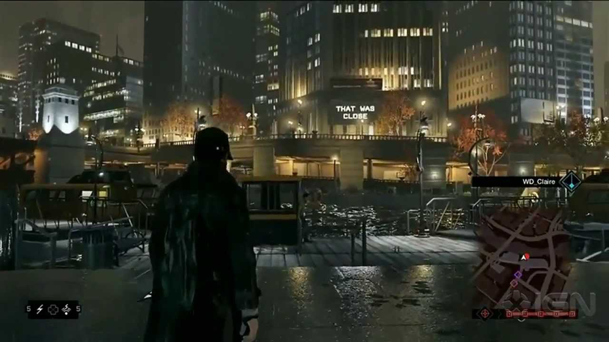

Release date : 2012/06/05
Click here to see the trailer
Fact about the trailer :
The trailer gave to players an awesome immersive game with incredible graphics and a lore which seems like a movie.
However, the actual game when he was available wasn't the same.
That's the reason why a part of fans were crazy when it came out
Nevertheless, without the E3 graphics, the game was beautiful even it was a downgrade
During the trailer, we can clearly see that Aiden Pearce, the fox is tailing and tracking Joseph DeMarco